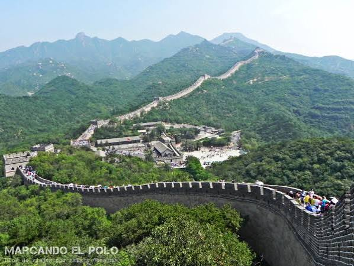
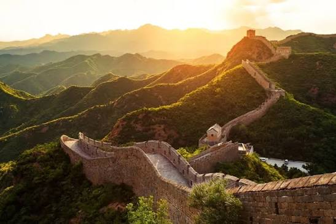

|
 |
IntroducciónLa Gran Muralla china es una antigua fortificación china, construida y reconstruida entre el siglo V a. C. y el siglo XVI para proteger la frontera norte del Imperio chino durante las sucesivas dinastías imperiales de los ataques de los nómadas xiongnu de Mongolia y Manchuria. |
Otros datos de interésContando sus ramificaciones y construcciones secundarias, se calcula que tiene unos 21 200 km de longitud, desde la frontera con Corea, al borde del río Yalu, hasta el desierto de Gobi, a lo largo de un arco que delinea aproximadamente el borde sur de Mongolia Interior, aunque hoy solo se conserva un 30 % de ella. En promedio, mide de 6 a 7 m de alto y de 4 a 5 m de ancho. La muralla fue designada Patrimonio de la Humanidad por la Unesco en 1987. |
 |